Celebrate the Joy, Colors, and Traditions of Every Festival!Experience the beauty of festivals all in one place.Celebrate the traditions that make every festival special. Stay festive all year!
×
Sign In
Let's Explore India's Festive Legacy
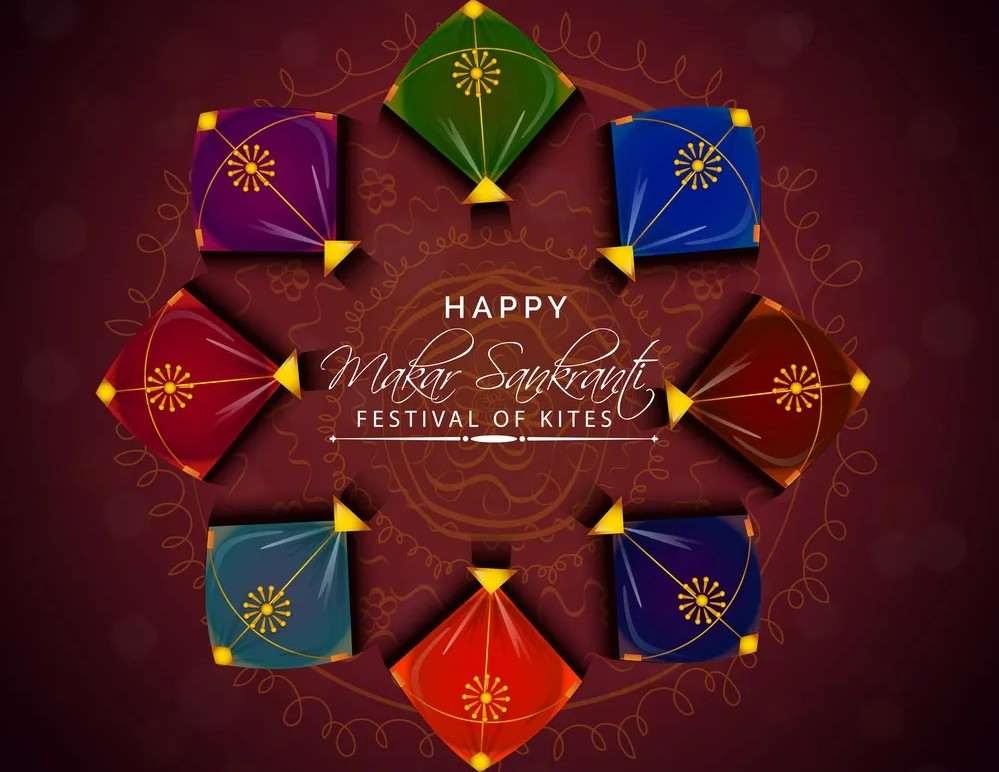
Celebrate the Spirit of Makar Sankranti
Makar Sankranti marks the Sun’s transition into Capricorn, symbolizing new beginnings and prosperity. Across India, the festival is celebrated with kite flying, traditional sweets like tilgul, bonfires, and cultural rituals. It’s a time of gratitude, joy, and togetherness. Read More
Celebrate Basant Panchami - Festival of Spring
Basant Panchami marks the arrival of spring and honors Goddess Saraswati, the deity of knowledge and arts. Celebrated with prayers, vibrant yellow attire, and joyful gatherings, it symbolizes new beginnings, wisdom, creativity, and prosperity. Read More
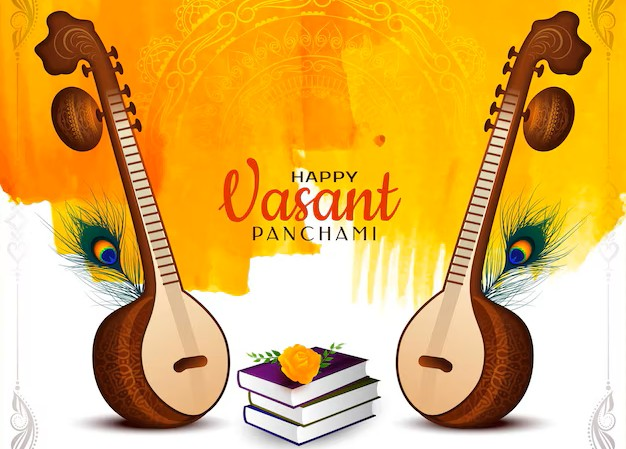
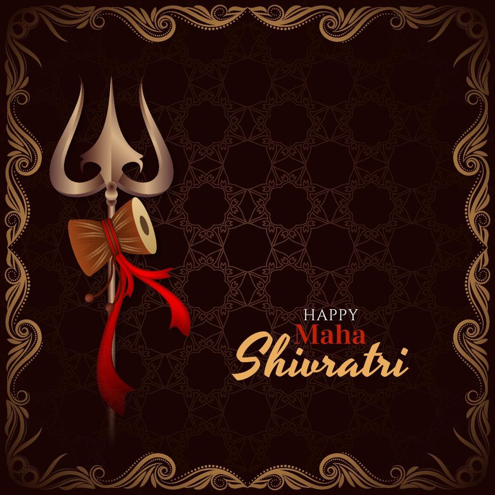
Embrace the Divine Energy of Mahashivratri
Mahashivratri, the great night of Lord Shiva, is a time for devotion, meditation, and spiritual awakening. Observed with fasting, night-long vigils, and sacred chants, it symbolizes the triumph of self-discipline and inner peace, inviting divine blessings and transformation. Read More
Celebrate the Colors of Joy – Holi
Holi, the festival of colors, marks the arrival of spring and the victory of good over evil. Filled with vibrant hues, music, and festive cheer, it brings people together through playful celebrations, traditional sweets, and the spirit of harmony and renewal. Read More
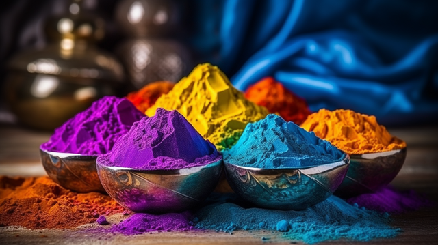
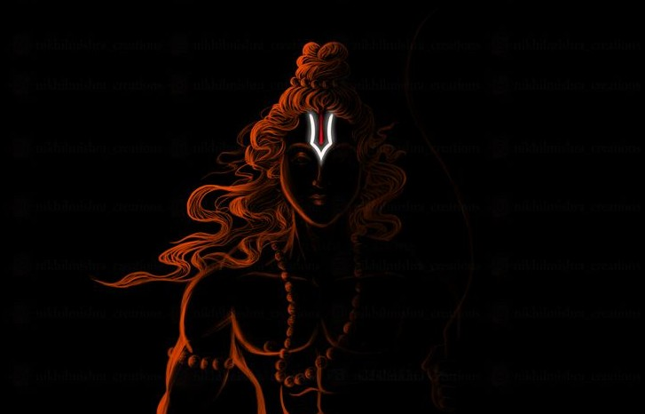
Celebrate the Divine Birth – Ram Navami
Ram Navami honors the birth of Lord Rama, the embodiment of virtue and righteousness. Devotees celebrate with prayers, bhajans, and grand processions, reflecting on his ideals of dharma and devotion. Temples resonate with chants, spreading peace, faith, and spiritual harmony.Read More
Janmashtami – The Divine Birth of Lord Krishna
Janmashtami celebrates the birth of Lord Krishna, the embodiment of love and wisdom. Temples and homes echo with bhajans, while devotees observe fasts, enact Krishna’s childhood leelas, and break the Dahi Handi, symbolizing his playful spirit and divine blessings.Read More
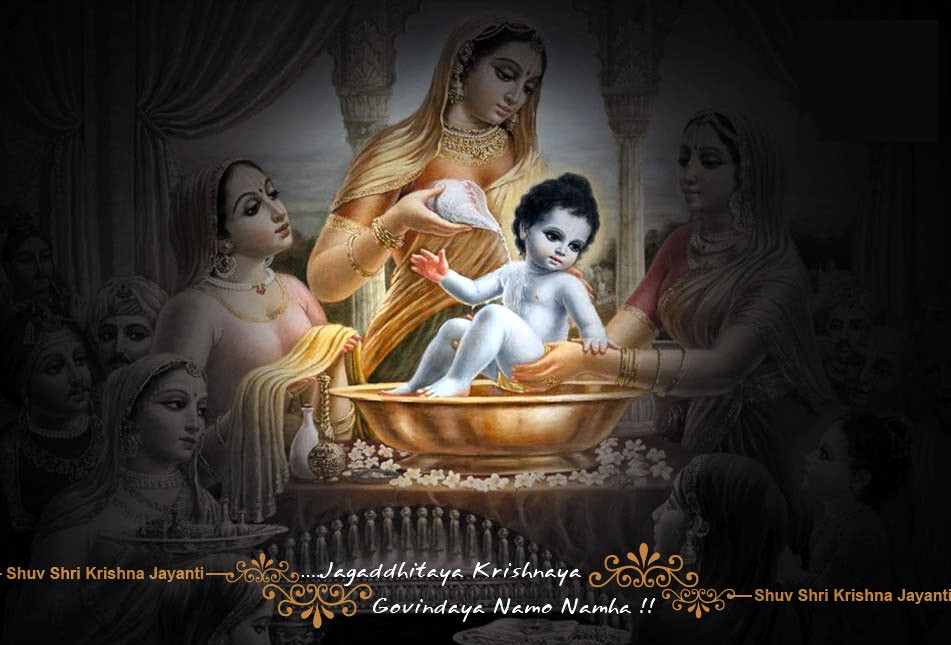
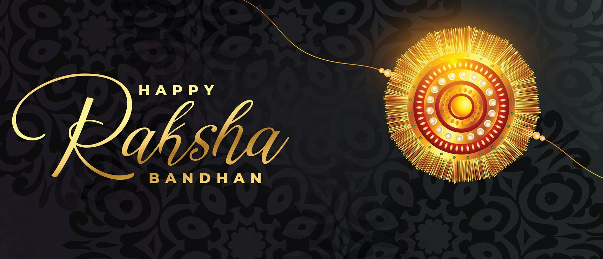
Celebrate Raksha Bandhan - Festival of Sibling Bond
Raksha Bandhan celebrates the special bond between brothers and sisters. Sisters tie a protective thread (rakhi) around their brothers’ wrists, symbolizing love, care, and protection. It’s a joyous occasion for family gatherings and strengthening sibling relationships.Read More
Ganesh Chaturthi – Welcoming the Lord of Wisdom
Ganesh Chaturthi marks the joyous arrival of Lord Ganesha, the remover of obstacles and the harbinger of prosperity. Vibrant processions, devotional chants, and elaborate idols fill the air with devotion. Homes and pandals resonate with prayers, modaks, and heartfelt celebrations.Read More
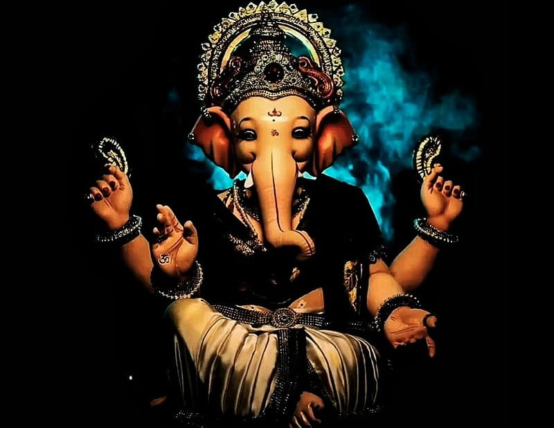
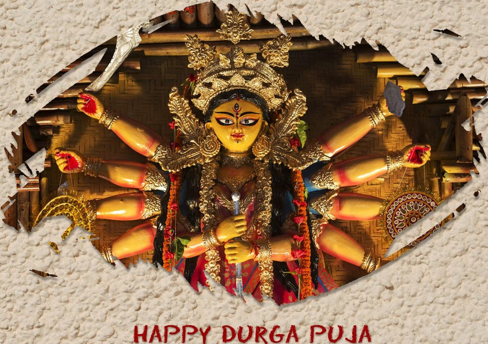
Celebrate Durga Puja - Festival of Devotion
Durga Puja honors Goddess Durga’s victory over evil, with prayers, cultural performances, and vibrant celebrations. It symbolizes strength, power, and protection, bringing communities together to rejoice, express devotion, and celebrate the triumph of good over evil.Read More
Navratri – The Festival of Divine Energy
Navratri, a nine-night celebration of Goddess Durga, symbolizes the triumph of good over evil. Devotees observe fasts, perform Garba and Dandiya, and offer prayers with unwavering devotion. Each night honors a different form of the Goddess, bringing spiritual awakening and festive joy.Read More
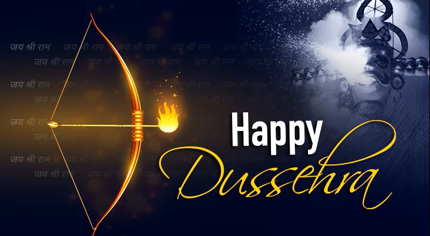
Celebrate Dussehra - Victory of Good Over Evil
Dussehra marks the triumph of Lord Rama over Ravana. It's a time of joy, unity, and devotion, celebrated with prayers, family gatherings, and vibrant festivities that symbolize righteousness prevailing over darkness.Read More
Celebrate Diwali - Festival of Lights
Diwali celebrates the victory of light over darkness, with prayers, fireworks, family gatherings, and home decorations. It symbolizes hope, prosperity, new beginnings, joy, and the triumph of good over evil, uniting communities in celebration and devotion.Read More
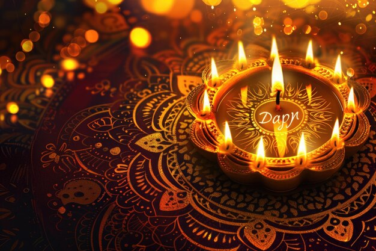
Frequently Asked Questions
Why do we celebrate these festivals?
Festivals are celebrated to bring people together, spread joy, and remember important cultural and religious events. They help us stay connected to our traditions and values.
How do people celebrate these festivals in different parts of India?
Celebrations vary a lot! For example, in North India, people play with colors on Holi, while in the South, they decorate homes with rangoli. During Diwali, homes are lit up with diyas everywhere, and on Ganesh Chaturthi, beautiful idols of Lord Ganesha are made and worshipped.
What special foods are made during these festivals?
Each festival has its special dishes! During Holi, people enjoy gujiyas (sweet dumplings). On Diwali, there are lots of sweets like laddoos and barfis. Ganesh Chaturthi is known for modaks, and during Raksha Bandhan, families prepare festive meals and sweets.
What are the mythological or historical stories behind these festivals?
Most festivals have interesting stories! Diwali celebrates Lord Rama’s return to Ayodhya after defeating Ravana. Holi marks the victory of good over evil, symbolized by the burning of Holika. Mahashivratri is dedicated to Lord Shiva, and Janmashtami celebrates the birth of Lord Krishna.
How can we celebrate these festivals in an eco-friendly way?
We can use natural colors, avoid plastic, use clay idols for immersion, and reduce the use of fireworks. This way, we enjoy the festivals while also taking care of our environment!
Where can I experience grand celebrations of these festivals in India?
Some famous places to experience big celebrations are Mathura for Holi, Kolkata for Durga Puja, Mumbai for Ganesh Chaturthi, and Varanasi for Dev Deepawali. Each place has its unique charm and energy during the festivals!
What are some unique traditions followed during these festivals?
Traditions include tying rakhi on Raksha Bandhan, fasting during Navratri, breaking Dahi Handi on Janmashtami, and flying kites on Makar Sankranti. Each tradition has a special meaning and makes the festival memorable.